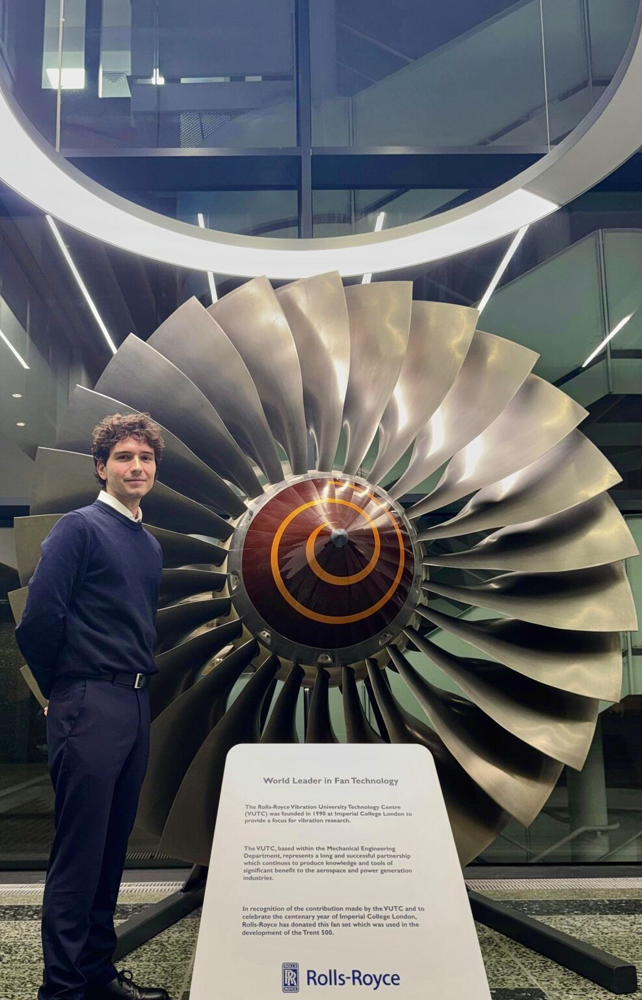

TFG · 2025
Investigación en física solar
Unraveling the Core of Heliospheric Flux Ropes: Advanced Modeling of Magnetic Topologies and Thermodynamic Insights
MATERIAL PARA EXPLORAR
Investigación, imágenes y publicaciones de mi trayectoria.
Unraveling the Core of Heliospheric Flux Ropes: Advanced Modeling of Magnetic Topologies and Thermodynamic Insights
Mi perfil en el libro de la promoción del CFIS: doble grado, investigación, emprendimiento e intereses.
Consultar en la UPC
